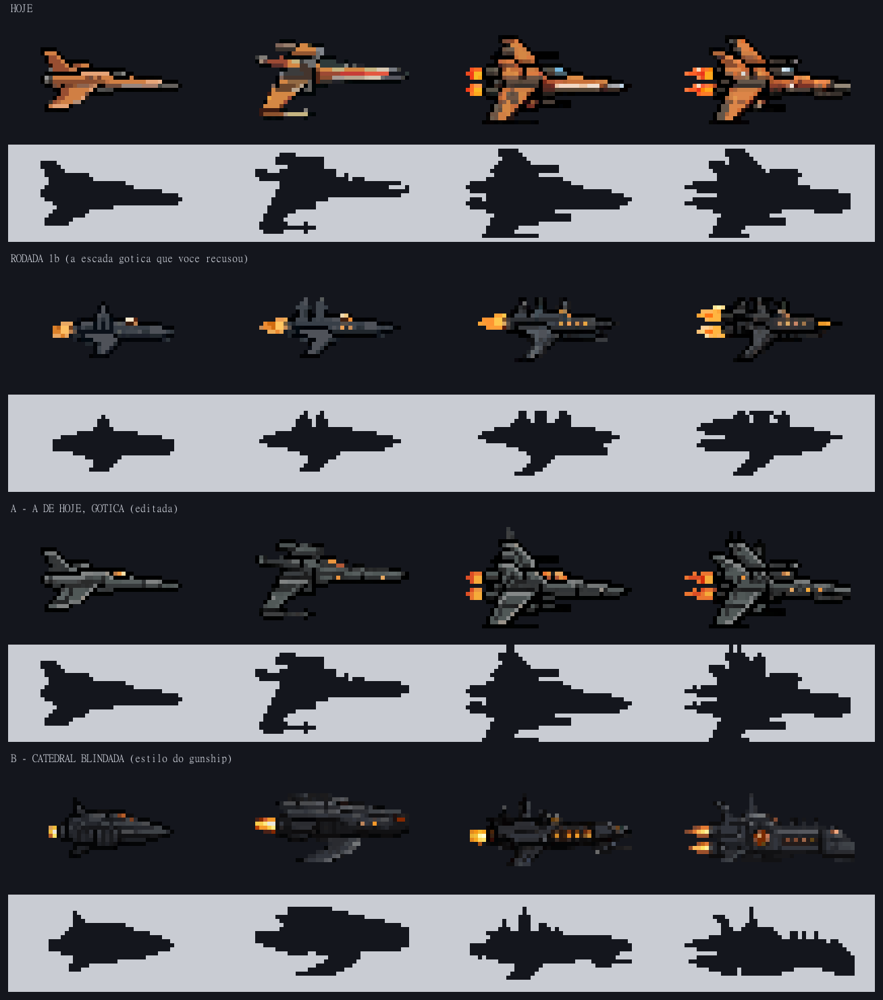
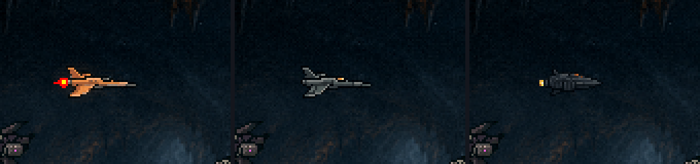
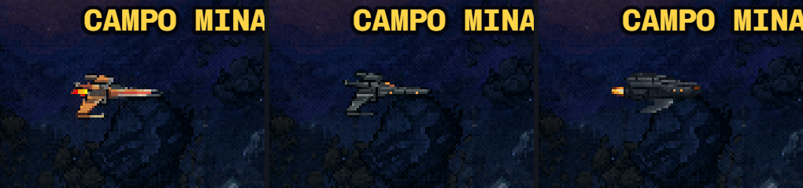
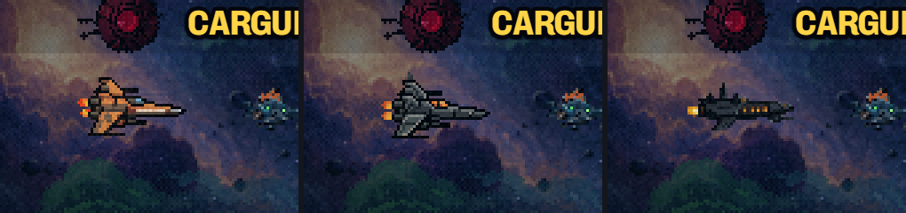
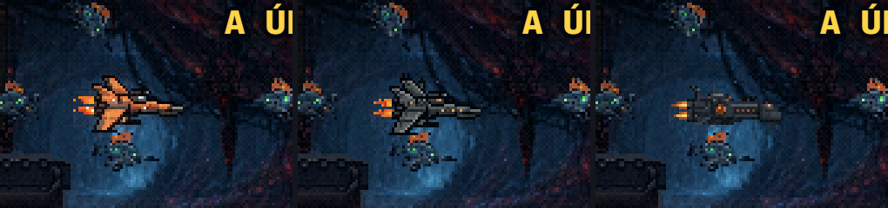

As naves · o teste de detalhe (rodada 1c)
23/10/2026 · ← a escada gótica (1b), recusada · → recusada; a forma primeiro (2a) ·Você disse: "a nave humana atual tem mais detalhes, essa nave gótica fica muito aquém do que eu imaginava". Aqui o alvo foi o DETALHE, medido contra a nave de hoje. Nada instalado.
O que faltava, medido: a T3 de hoje tem ~440 pixels de desenho, em planos grandes de três tons (luz, meio, sombra), com vidro na cabine, brilho no nariz e asas largas. A gótica 1b tinha ~280, um casco fino e escuro, quase sem contraste por dentro.
As causas: o estilo que eu usei era uma nave pequena e lisa (a ship-cinza), e o pedido dizia "low contrast", o que achatou os planos.
O que testei: partir da nave de hoje (A), e usar como estilo a sua peça dark sci-fi mais detalhada, o gunship do cinturão (B).
As duas famílias

- A · A de hoje, gótica: as quatro naves de hoje editadas juntas, numa chamada só. O casco virou grafite com aresta clara em cada placa, o âmbar ficou só nos motores, na cabine e em janelinhas, e a T2 e a T3 ganharam torrezinhas no dorso. Mantém o detalhe e a evolução de hoje. O gótico é sutil, e as torres somaram altura: a T3 tem 24 px, mais que os 22 de hoje.
- B · Catedral blindada: uma nave nova no estilo do gunship. Placas pesadas, rosácea acesa, fileira de janelas ogivais, torres e motor duplo na T3. É a mais gótica e detalhada, mas a família ainda não está coesa: a T1 saiu mais pesada que a T2. É escura, e no estilo do gunship lembra um inimigo.
| T0 | T1 | T2 | T3 | |
|---|---|---|---|---|
| Hoje | 35×16 · 251 px | 38×20 · 305 | 41×22 · 424 | 41×22 · 440 |
| 1b (recusada) | 30×14 · 191 | 35×15 · 214 | 35×16 · 256 | 36×16 · 282 |
| A | 35×16 · 251 | 38×20 · 309 | 41×25 · 429 | 41×24 · 452 |
| B | 31×15 · 233 | 38×17 · 376 | 40×18 · 317 | 42×17 · 377 |
A troca que só você decide: detalhe custa pixel. As que chegam ao detalhe de hoje têm quase o tamanho de hoje. A 1b era menor justamente por ter menos desenho. A hitbox é a mesma (21×9) em todas.
No jogo




Como saiu
- A:
/edit-images-v2(editar com texto) sobre as quatro de hoje de uma vez, o que segura a família (scripts/_naves/_editar-hoje.mjs). Editar com o gunship de referência deu quase o mesmo resultado. A edição não sabe reduzir: a saída precisa de pelo menos 32 px de altura. - B:
/generate-image-v2com o gunship como estilo e o pedido de detalhe novo (_gerar-goticas.mjs --detalhe). Quase todas saíram "dando a volta" no quadro e foram desenroladas. - ~110 gerações nesta rodada. Candidatas em
naves/cru/detalhe/.
O que eu preciso de você
- O que você imaginava: se tiver uma imagem (uma pintura sua, um esboço, uma nave de outro jogo), ela vira a referência de desenho, e as próximas candidatas saem dela, não do texto. Duas rodadas no escuro já erraram.
- A, B ou nenhuma: qual está mais perto do caminho.
- Detalhe ou tamanho: se o detalhe de hoje vale o tamanho de hoje (ou perto disso), ou se a nave deve ficar menor mesmo com menos desenho.